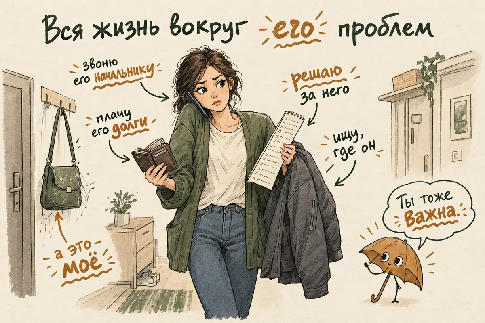
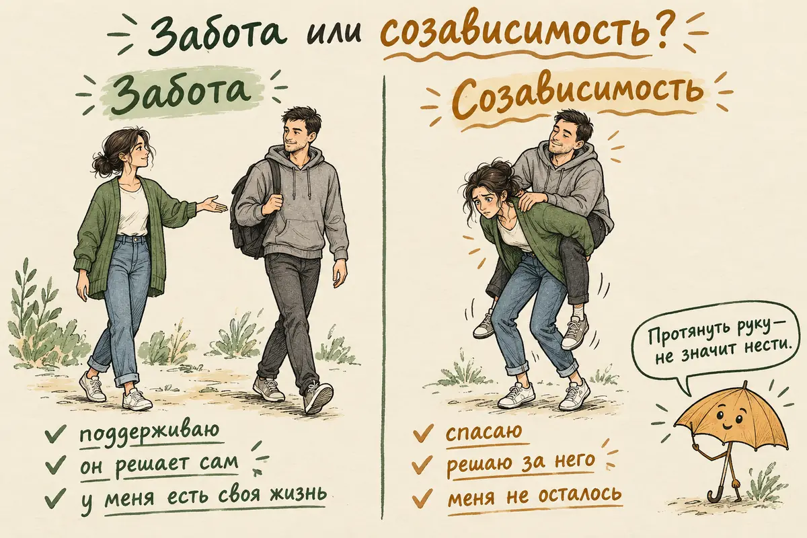
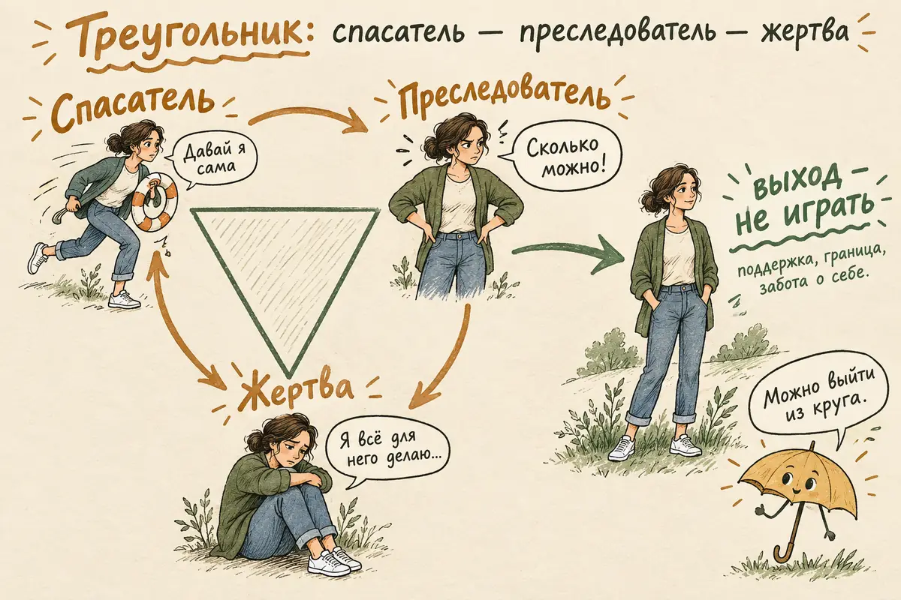
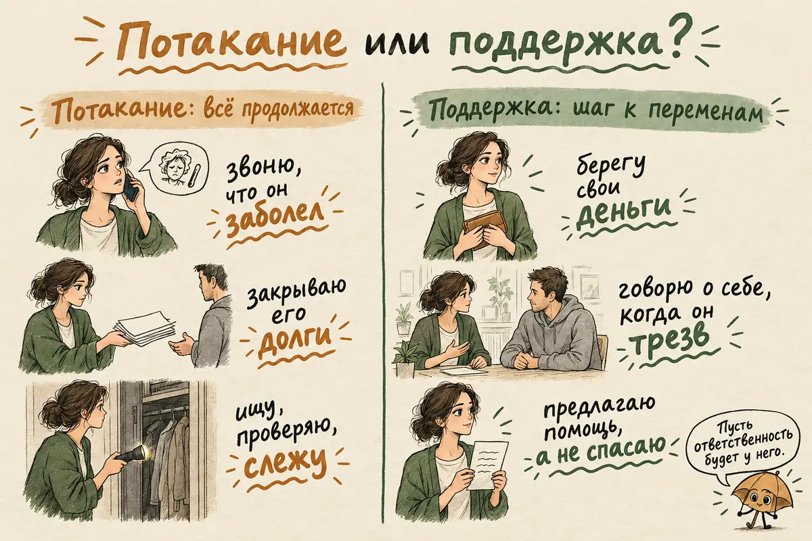
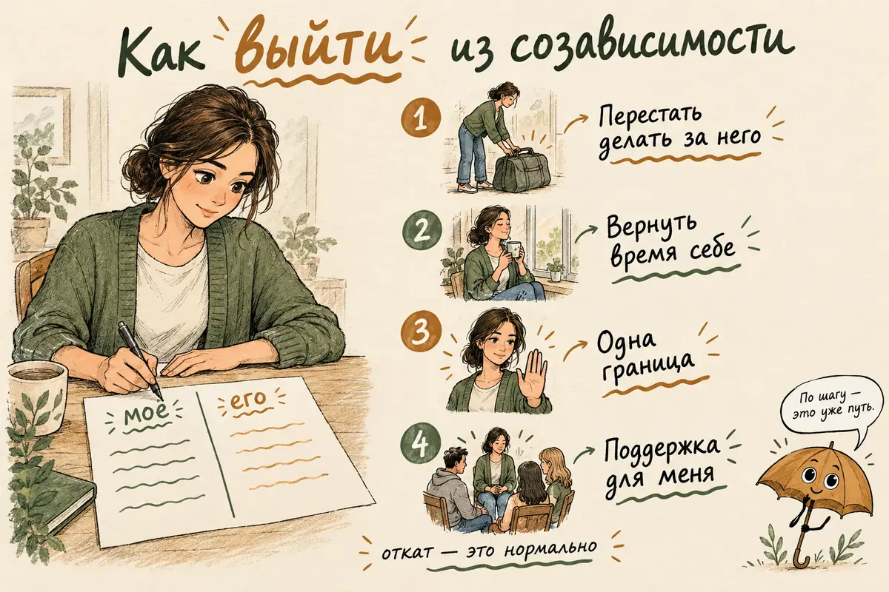
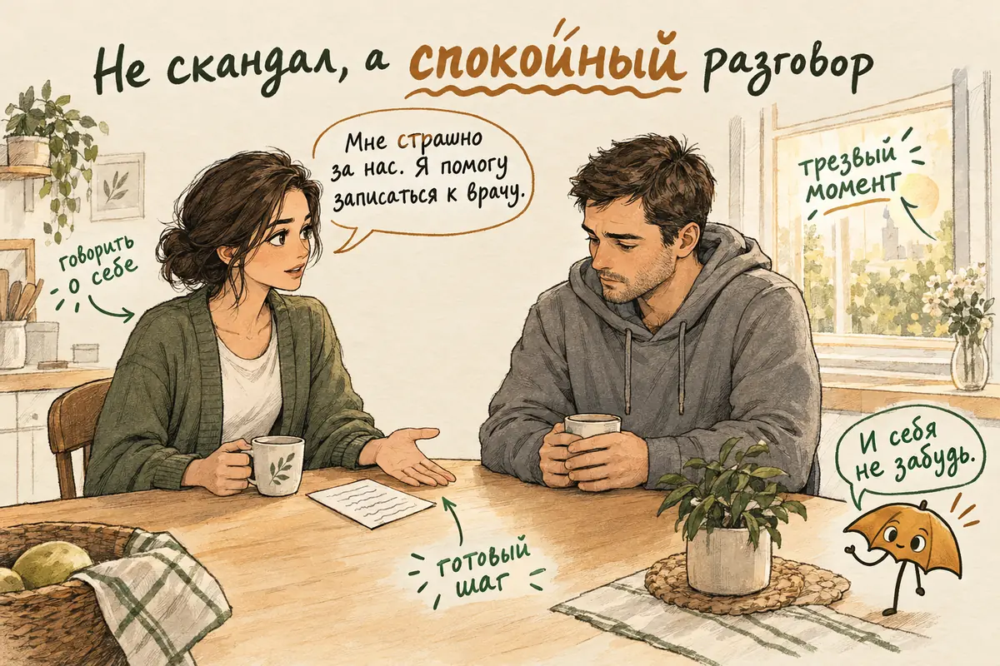
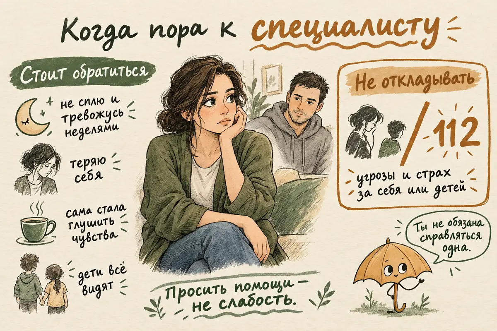

Главная → Блог → Созависимость
Созависимость: что это простыми словами, признаки в отношениях и как из неё выйти
Обновлено: 21.10.2026 · Источники проверены: 21.10.2026 · 19 минут чтения
Подготовлено по материалам NHS, Ал-Анон и рецензируемым исследованиям о близких людей с зависимостью
Созависимость — это состояние, при котором жизнь человека подчиняется чужой проблеме: зависимости, игре, постоянным кризисам или безответственности близкого. Созависимый спасает, контролирует, прикрывает и чинит другого, а собственные чувства, желания и здоровье отодвигает на потом. Слово пришло из помощи семьям людей с алкогольной и наркотической зависимостью, а сейчас им описывают и отношения, в которых один постоянно «вытаскивает» другого. Это не диагноз и не черта характера, а неоднозначное рабочее понятие: так называют сложившийся способ выживать рядом с чужой бедой. Сами по себе забота, тревога за близкого и желание помочь созависимостью не являются. Из этого круга можно выйти, не переставая любить человека.
Другая история — без алкоголя. Сыну Ольги Викторовны тридцать лет. Она оплачивает его кредиты, договаривается с арендодателем, по утрам звонит, чтобы он не проспал работу, и не спит, если он не отвечает. Всё это давно не помогает ему встать на ноги, но остановиться она не может: «Если не я, то кто?»
- Что такое созависимость простыми словами
- Созависимость — это болезнь? Откуда взялось слово
- 12 признаков созависимости в отношениях
- Созависимость, эмоциональная зависимость и любовь: в чём разница
- Треугольник Карпмана: спасатель, преследователь, жертва
- Созависимость с алкоголиком: где помощь, а где потакание
- Созависимость без алкоголя: партнёр, родители, взрослые дети
- Почему возникает созависимость
- Как избавиться от созависимости: 8 шагов
- Как помочь зависимому близкому и не раствориться в нём
- Что мешает выйти из созависимости
- Книги о созависимости: что важно знать
- Когда обращаться к психологу и где искать помощь
- Частые вопросы
Что такое созависимость простыми словами
Созависимость — это когда центр вашей жизни сместился с вас на другого человека и его проблему. Вы живёте в режиме постоянной готовности: следите, не выпил ли он, не проиграл ли деньги, не сорвётся ли, не обидится ли. Решаете за него, извиняетесь за него, выручаете его. Ваше состояние полностью зависит от того, как дела у него.
Само по себе желание помочь близкому нормально. Созависимостью это становится, когда помощь перестаёт работать и превращается в образ жизни. Помогаете вы, а меняться должен он, но ничего не меняется. Вы устаёте всё сильнее, а проблема другого остаётся на месте или растёт, потому что последствия каждый раз смягчаете вы.
Классическая картина — семья человека с алкогольной, наркотической или игровой зависимостью. Но похожий узор бывает и без веществ: рядом с партнёром, который годами не работает и живёт в долг, с человеком, который постоянно угрожает «сорваться», со взрослым ребёнком, за которого родитель продолжает решать всё. Общее у этих историй одно: проблема чужая, а нести её приходится вам.
Созависимость — это болезнь? Откуда взялось слово
Созависимость — не медицинский диагноз: её нет ни в МКБ-10, ни в МКБ-11, ни в американском DSM-5. Слово появилось в американской практике лечения зависимостей в 1970–80-х годах. Специалисты заметили, что у жён, мужей и родителей пациентов складывается свой устойчивый набор проблем: тревога, контроль, отказ от себя. Поэтому лечить нужно было не только «зависимого», но и «со-зависимого».
В 1986 году психиатр Тимен Сермак предложил диагностические критерии и считал, что созависимость стоит включить в DSM как расстройство личности. Этого так и не произошло. Уже в обзоре 1991 года отмечалось, что общепринятого определения нет, и за 35 лет оно так и не появилось. В русскоязычной литературе и в практике помощи семьям зависимых термин используется широко: о нём пишут книги, по нему проводят группы и лекции.
У понятия есть серьёзные критики. Британские исследователи Джим Орфорд и его коллеги считают, что близкие зависимых не больны, а живут под тяжёлым и долгим стрессом. Всё, что выглядит как «созависимость», — это попытки справиться с ситуацией, к которой никто не готов. Таких людей в мире, по их оценке, порядка ста миллионов, и помощи именно для них самих почти нет. Другая линия критики — что ярлык чаще всего вешают на женщин и делает он виноватой ту, кто тянет на себе семью.
Мы в этой статье пользуемся словом «созависимость» как удобным рабочим описанием, а не как приговором. Важно не то, есть ли у вас «созависимость», а то, что именно происходит в вашей жизни и что из этого вы хотите изменить. Когда участники британского исследования 2020 года рассказывали, как они сами переживают созависимость, звучали три темы: размытое ощущение себя, хронический перекос в отношениях и на работе, когда отдаёшь гораздо больше, чем получаешь, и детский опыт контроля или брошенности.
12 признаков созависимости в отношениях
Главный признак созависимости — ваша жизнь организована вокруг проблем другого человека, а не вокруг вас. Ниже — то, что чаще всего описывают люди в такой ситуации. Это не тест и не способ поставить себе диагноз. Это способ заметить, где вы оказались.
- Его настроение определяет ваше. Хороший день у него — хороший у вас. Плохой — вы весь день напряжены и ищете, чем помочь.
- Вы контролируете. Проверяете телефон, карты, карманы, считаете бутылки, звоните, чтобы узнать, где он.
- Вы прикрываете. Врёте начальнику, родственникам и детям, объясняете, извиняетесь, сглаживаете.
- Вы разгребаете последствия. Платите его долги, решаете его проблемы на работе, убираете за ним, улаживаете конфликты.
- Вам трудно сказать «нет». Отказ кажется предательством, а чужое недовольство — катастрофой.
- Вы чувствуете ответственность за его поступки. «Если бы я была внимательнее, он бы не сорвался».
- Вы верите обещаниям вопреки опыту. Каждый «последний раз» даёт надежду, хотя таких раз было уже много.
- Ваши желания исчезли. На вопрос «чего вы хотите?» трудно ответить, хобби, друзья и планы ушли на второй план.
- Вы скрываете, что происходит. Стыдно рассказать, и вы остаётесь с этим в одиночку.
- Вы чувствуете себя нужной только тогда, когда спасаете. Без роли помощника непонятно, кто вы и зачем вы ему.
- Вы живёте в постоянной тревоге и истощении. Плохой сон, напряжение в теле, частые болезни, ощущение, что сил больше нет.
- Вы терпите то, что раньше казалось недопустимым. Оскорбления, ложь, угрозы постепенно становятся «нормой».
Эти признаки не позволяют поставить себе диагноз. Тревога, плохой сон и истощение бывают при любом долгом стрессе, при депрессии и тревожном расстройстве, а контроль и отказ от своих интересов — понятной реакцией на непредсказуемую или небезопасную обстановку. Важнее не число совпавших пунктов, а три вопроса:
- Могу ли я заниматься своей жизнью, даже когда у близкого проблемы?
- Могу ли я отказать ему без невыносимой вины или страха?
- Могу ли я принимать решения, не сверяясь постоянно с его состоянием?
Если на все три ответ «нет» и так продолжается месяцами, это повод заняться собой всерьёз. Последний пункт списка особенный: если в отношениях есть угрозы, унижения или насилие, речь уже не о созависимости, а о вашей безопасности. Об этом — в статье о токсичных отношениях и в разделе о специалистах.

Созависимость, эмоциональная зависимость и любовь: в чём разница
Условно разницу можно описать так: эмоциональная зависимость — это «не могу без него», созависимость — «не могу перестать его спасать». В обиходе эти слова смешивают, но они описывают разные узоры. При эмоциональной зависимости в центре страх потерять человека: вы цепляетесь, ждёте сообщений, не можете уйти. При созависимости в центре его проблема: вы контролируете, чините и тащите. Часто бывает и то и другое сразу, но понимание, что сильнее у вас, подсказывает, с чего начинать.
| Здоровая забота | Созависимость | Эмоциональная зависимость | |
|---|---|---|---|
| Главное чувство | Любовь и тревога за близкого | Ответственность за его жизнь и страх, что без вас всё рухнет | Страх потерять человека и остаться одной |
| Что вы делаете | Поддерживаете, говорите честно, предлагаете помощь | Контролируете, прикрываете, решаете его проблемы вместо него | Ждёте, подстраиваетесь, цепляетесь, не можете уйти |
| Кто отвечает за его жизнь | Он сам | Фактически вы | Он, но от него зависит ваша жизнь |
| Ваша жизнь | Остаётся вашей: друзья, работа, интересы | Подчинена его проблеме | Подчинена отношениям с ним |
| Когда ему плохо | Вы сочувствуете, но не тонете | Вы бросаетесь спасать | Вы боитесь, что он отдалится |
Это не взаимоисключающие типы и не диагностические критерии: таблица показывает, на чём делается акцент, а в жизни всё часто смешано. Отдельный признак здоровой заботы — возможность сказать «нет» без ощущения, что вы предали человека. Если такой возможности нет, это повод разобраться, как выстраивать личные границы. Если вы видите в себе тревожное цепляние за партнёра, загляните в статью о типах привязанности: у некоторых людей тревога в отношениях сочетается со стремлением стать незаменимым через помощь.

Треугольник Карпмана: спасатель, преследователь, жертва
Отношения при созависимости часто ходят по кругу из трёх ролей: спасатель, преследователь и жертва. Эту схему в 1968 году описал психотерапевт Стивен Карпман и назвал её «драматическим треугольником». Это не научная теория, которую проверяли в исследованиях, а наглядная модель. Многие узнают в ней свои отношения с первого взгляда.
- Спасатель. Вы выручаете, решаете, прикрываете. «Давай я сама позвоню, ты же не справишься». Ощущение собственной нужности, но и растущая обида: сколько можно?
- Преследователь. Обида прорывается: упрёки, крики, ультиматумы. «Ты всё разрушил, ты никогда не изменишься». Ненадолго становится легче, потом приходит вина.
- Жертва. «Я всё для него делаю, а он…». Бессилие, жалость к себе, ощущение, что от вас ничего не зависит.
В некоторых отношениях роли меняются и у второго человека: тот, кого спасают, в другой момент обвиняет близких или чувствует себя беспомощным. Бывает, что роли сменяются за один вечер, а треугольник остаётся. Выход из него не в том, чтобы найти «правильную» роль, а в том, чтобы перестать в нём участвовать. Вместо спасения — поддержка, при которой ответственность остаётся у человека. Вместо преследования — спокойная граница. Вместо позиции жертвы — забота о себе и свои решения.

Созависимость с алкоголиком: где помощь, а где потакание
Рядом с человеком, который пьёт, употребляет или играет, созависимость складывается часто: вся семья постепенно начинает жить вокруг его зависимости. Это не слабость и не ошибка. Так многие реагируют на постоянную угрозу: стараются предсказать, предотвратить и смягчить. Сложность в том, что часть этих действий, сделанных из любви, может незаметно снижать у человека стимул что-то менять.
В англоязычной литературе это называют словом enabling, по-русски — «потакание» или «облегчение последствий». Когда вы регулярно платите долги, прикрываете перед работой, убираете последствия запоя, человек может так и не встретиться с тем, что делает с ним зависимость. А встреча с последствиями — один из частых поводов задуматься о лечении.
Но не всякая помощь — потакание. Вызвать скорую, увести детей из опасной ситуации, накормить, помочь безопасно добраться домой, оплатить лечение, не рассказывать начальнику подробности чужой жизни — это забота и безопасность, а не поддержка зависимости. Полезный вопрос к каждому своему действию: оно помогает безопасности и пути к лечению или из раза в раз скрывает проблему и перекладывает её последствия на вас? Ответ зависит от обстоятельств, и таблица ниже — ориентир, а не свод правил.
| Потакание: зависимость продолжается | Поддержка: шаг к переменам | |
|---|---|---|
| Деньги | Закрыть долги, дать «последний раз» | Защитить свои деньги, оплатить лечение напрямую, если он решится |
| Работа и люди | Позвонить начальнику, что он «заболел» | Не врать за него, пусть объясняется сам |
| Срыв | Каждый раз убирать последствия и делать вид, что ничего не было | Спокойно сказать, что вы видели и что чувствуете, когда он трезв |
| Контроль | Искать бутылки, проверять телефон, следить | Перестать следить и заняться своей жизнью |
| Разговоры | Упрёки, угрозы, которые не выполняются | Говорить о себе и предлагать помощь в трезвый момент |
Важная оговорка: перестать потакать — не значит оставить человека в опасности. Если он в тяжёлом опьянении, без сознания, у него судороги или сильная рвота, звоните 112. Если человек пьёт каждый день, резко бросать опасно, об этом — в статье об алкоголе и тревоге. Если зависимость игровая, что делать близким, разобрано в статье о лудомании: защитить деньги, не закрывать долги, оформить самозапрет на кредиты.

Созависимость без алкоголя: партнёр, родители, взрослые дети
Созависимые отношения бывают и там, где никто не пьёт и не играет: узнаются они по тому же перекосу, когда один годами несёт ответственность за жизнь другого. Вот как это чаще всего выглядит:
- С партнёром. Муж или жена живёт от кризиса к кризису: долги, увольнения, вспышки, угрозы «всё бросить». Вы гасите пожары, извиняетесь перед его родными, держите в голове его дела и боитесь, что без вас он не справится.
- Со взрослым ребёнком. Родитель продолжает оплачивать, решать и улаживать за сына или дочь, которым давно за двадцать. Помощь давно не помогает встать на ноги, а отказать кажется предательством.
- С мамой или отцом. Взрослый ребёнок живёт настроением родителя: подстраивает свои планы, отвечает за его одиночество и обиды, чувствует вину за любую самостоятельность. Как говорить с родителями о своих решениях, разобрано в статье о личных границах.
Важно отличать это от обычного ухода. Когда близкий тяжело болеет или стареет и вы за ним ухаживаете, усталость и тревога — естественная часть заботы, а не созависимость. Вопрос не в объёме помощи, а в том, остаётся ли у человека ответственность за то, что он может сам, и остаётся ли у вас хоть что-то своё.
Почему возникает созависимость
Созависимость складывается из двух вещей: тяжёлой ситуации сейчас и привычек, которые человек принёс из прошлого. Ситуация работает сама по себе: долгий стресс рядом с зависимым близким постепенно меняет любого. Но одни люди втягиваются глубже и быстрее других, и обычно этому есть объяснение.
- Детство рядом с зависимостью или хаосом. Если в семье пили, болели или скандалили, ребёнок рано учится угадывать настроение взрослых, быть удобным и отвечать за чужие чувства. Это помогало выжить тогда и продолжает работать сейчас, хотя уже мешает. Подробнее — в статье о детских травмах.
- Роль «сильной» в семье. Старшие дети, которые растили младших, или те, кого хвалили только за помощь, привыкают, что их ценность — в полезности.
- Низкая самооценка. Если не верится, что вас можно любить просто так, нужность другому становится заменой любви. Об этом — в статье о самооценке.
- Вина и стыд. «Если я уйду или перестану помогать, случится беда, и это будет моя вина». Как отличить реальную ответственность от ложной вины, разобрано в статье о чувстве вины.
- Культурные ожидания. «Жена должна терпеть», «мать всё отдаст ради сына», «сор из избы не выносят». Такие установки делают спасательство нормой, а обращение за помощью — позором.
В схема-терапии такой узор называют схемой самопожертвования: привычкой ставить чужие нужды выше своих, даже когда это вредит. Как с ней работают, рассказано на странице о схема-терапии.
Как избавиться от созависимости: 8 шагов
Выйти из созависимости — значит вернуть ответственность за чужую жизнь её хозяину, а себе вернуть свою. Это не одномоментное решение, а постепенный процесс. Его можно начать, даже если близкий не меняется и вы пока не готовы ничего решать насчёт отношений.
- Назовите происходящее. Признать, что ваша жизнь подчинена чужой проблеме, — уже шаг. Без обвинений себя: вы делали то, что умели, в очень тяжёлой ситуации.
- Разделите своё и чужое. Возьмите лист, разделите его на две колонки: «моя ответственность» и «его ответственность». Его выпивка, долги, работа и обещания — во вторую колонку. Ваш сон, здоровье, деньги и дети — в первую.
- Перестаньте делать за него то, что он может сам. Начните с малого: не звонить начальнику, не искать его по друзьям, не закрывать один из долгов. Будет тревожно, это нормально.
- Заметьте свои чувства. Злость, усталость, обида, страх — у вас тоже есть чувства, и они важны. Записывайте их, говорите о них с тем, кому доверяете.
- Верните себе одну вещь для себя. Встреча с подругой, прогулка, занятие, которое вы бросили. Не «когда он исправится», а сейчас, хотя бы час в неделю.
- Выстройте одну границу и держите её. Выбирайте её с учётом своей безопасности: если близкий угрожает, бывает агрессивен или контролирует ваши деньги и передвижения, не объявляйте ему о своих планах заранее — сначала продумайте, где и у кого вы получите поддержку. Если опасности нет, граница может звучать так: «Я не буду давать деньги, пока ты не начнёшь лечиться» или «Если ты пьяный, я ухожу ночевать к маме». Граница — это то, что сделаете вы, а не требование к нему.
- Найдите поддержку для себя. Группа для близких зависимых, психолог, разговор с человеком, которому можно рассказать всё. Изоляция поддерживает созависимость сильнее всего.
- Позаботьтесь о теле. Сон, еда, врач, если давно не были. Хронический стресс копится в теле: головные боли, давление, частые простуды. О том, как он проявляется, — в статье о психосоматике.
Будьте готовы к откату. Когда вы перестаёте спасать, система, которая годами держалась на вас, может сопротивляться: близкий обижается, давит на вину, обостряет кризис, а родные осуждают. Само по себе это не значит, что вы поступаете неправильно, но и не доказывает, что правильно, — смотрите на реальные последствия. Если сопротивление переходит в угрозы или агрессию, на первом месте ваша безопасность.

Как помочь зависимому близкому и не раствориться в нём
Помочь зависимому близкому можно, но не через контроль и скандалы, а через спокойное влияние и заботу о себе. Это подтверждают исследования. В рандомизированном испытании 1999 года 130 близких людей, которые не могли уговорить родственника лечиться от алкоголизма, учили одному из трёх подходов. Через год:
- после программы CRAFT, которая учит менять поведение дома, без конфронтаций, лечиться пошли 64% зависимых;
- после семейного «вмешательства» — заранее подготовленной встречи-конфронтации — 30%, причём 70% семей так и не решились его провести;
- после подготовки к участию в группах Ал-Анон — 13%.
Это результат одного испытания, и речь в нём о том, начал ли человек лечиться, а не о выздоровлении. Систематический обзор 2010 года, объединивший четыре испытания, пришёл к тому же выводу: после CRAFT к лечению приходили примерно две трети зависимых, и чаще всего это случалось после четырёх–шести занятий с близким. Обещать такой результат каждой семье нельзя, но направление понятно. Самим близким при этом становилось лучше во всех вариантах — значит, у групп поддержки своя польза.
Что лежит в основе CRAFT и чему можно научиться самостоятельно:
- Замечать и поддерживать трезвые моменты. Проводить время вместе, когда он трезв, и благодарить за это, а не только ругать за срывы.
- Не брать на себя последствия употребления. Не убирать за ним, не прикрывать, не выручать деньгами, если это не вопрос безопасности, — пусть последствия встречает он сам.
- Говорить о себе, а не о нём. «Мне страшно, когда ты садишься за руль после выпивки» слышат лучше, чем «ты алкоголик».
- Выбирать момент. Предлагать помощь, когда человек трезв и сам недоволен последствиями, — после тяжёлого утра, неприятности на работе.
- Держать наготове конкретный шаг. Телефон врача, адрес группы, готовность пойти вместе. Когда человек скажет «может быть», ответить «давай я запишу тебя на завтра».
- Следить за своей безопасностью. Если есть агрессия и угрозы, никакие техники не важнее вашей защиты.
Что делать, во многом зависит от того, где сейчас ваш близкий:
- Готов что-то менять. Помогите сделать первый шаг конкретным: записаться к наркологу или психотерапевту, найти группу, пойти вместе. Поддерживайте лечение, но не берите его на себя.
- Отрицает проблему. Перестаньте делать за него то, что он может сам, защитите свои деньги и силы и возвращайтесь к разговору в трезвые спокойные моменты.
- Опасен для вас или детей. Не вступайте в конфронтацию, особенно когда он пьян. Думайте о безопасности: где можно переждать, кому позвонить, где документы и деньги. При угрозе — 112.
В России программа CRAFT под этим названием встречается редко, но психологи, которые работают с семьями зависимых, часто опираются на те же принципы. Группы взаимопомощи по системе «12 шагов» для близких есть во многих городах: Ал-Анон — для родственников и друзей людей с алкогольной зависимостью, Нар-Анон — при наркотической, Гам-Анон — при игровой. Пусть в испытании они меньше помогали привести близкого к лечению, их задача другая — поддержать вас. В исследовании новичков Ал-Анон те, кто ходил на встречи полгода, чаще отмечали, что научились справляться с проблемами из-за выпивки близкого, чувствовали себя лучше и реже сталкивались с оскорблениями и насилием. Во многих наркологических диспансерах и реабилитационных центрах тоже есть консультации и группы для родственников.

Что мешает выйти из созависимости
Большинство действий созависимого делаются из любви, но не приближают ни его, ни близкого к переменам. Вот что чаще всего забирает силы впустую:
- Контроль и слежка. Найденные бутылки и прочитанные переписки не делают человека трезвым. Они учат его лучше прятаться, а вас — жить в режиме надзирателя.
- Угрозы, которые вы не выполните. «Если ещё раз — я уйду». Если вы не уходите, слова теряют вес, а человек узнаёт, что границ нет.
- Скандалы в момент опьянения. Разговор с пьяным человеком обычно бесполезен, а ссора может быть опасной. Важные вещи лучше обсуждать, когда он трезв.
- Ожидание «дна». Мысль, что зависимый должен всё потерять, прежде чем решиться, не подтверждается: помощь может начаться раньше, и близкие могут на это влиять.
- Решение «уйти или остаться» как единственный вопрос. Можно ничего не решать насчёт отношений и уже сейчас начать заботиться о себе.
- Лечение «втайне». Средства, которые подмешивают в еду или питьё без ведома человека, опасны для здоровья и разрушают доверие. Лечение работает, когда человек в нём участвует.
- Одиночество. Держать всё в себе из стыда — самый короткий путь к выгоранию и депрессии.
Книги о созависимости: что важно знать
Большинство известных книг о созависимости — популярная психология и опыт авторов, а не научные пособия. Им можно доверять как поддержке и способу узнать себя, но не как истине в последней инстанции. Чаще всего ищут такие:
- Мелоди Битти, «Codependent No More» (1986). Книга, которая сделала слово «созависимость» популярным. Написана женщиной, пережившей и зависимость, и созависимость, — тёплая, практическая, на русском выходила под разными названиями. У неё же есть книга ежедневных размышлений «День за днём».
- Берри и Джени Уайнхолд, «Освобождение от созависимости». Связывает созависимость с детским опытом и привязанностью. Там же есть опросник, известный как шкала созависимости Уайнхолдов, — это авторский инструмент, а не проверенный диагностический тест.
- Валентина Москаленко, «Созависимость — семейная болезнь». Книга российского психиатра-нарколога о семьях людей с зависимостью, с опорой на отечественный опыт работы.
Если книга вызывает в основном вину («я всё делаю неправильно»), отложите её. Хорошая книга о созависимости должна оставлять ощущение, что у вас есть выбор, а не что с вами что-то не так.
Когда обращаться к психологу и где искать помощь
К психологу или психотерапевту стоит обратиться, если вы чувствуете, что теряете себя, и не можете выйти из круга самостоятельно. Специалист поможет разобраться, что из вашего поведения защищает вас, а что держит в ловушке, отделить свою ответственность от чужой и выдержать сопротивление, когда вы начнёте меняться. Отдельного метода «лечения созависимости» нет: подход выбирают под конкретные трудности. С тревогой и чувством вины часто работают в КПТ, с давними привычками жертвовать собой — в схема-терапии, с последствиями детского опыта — в травма-ориентированной терапии, с отношениями в семье — в семейной. Если зависимость у близкого, ищите специалиста, который работает именно с семьями зависимых. Совместная или семейная терапия подходит не всегда: если в отношениях есть насилие или угрозы, начинать стоит с индивидуальной помощи.
Обратитесь за помощью обязательно, если:
- вы плохо спите, постоянно тревожитесь, ничего не радует уже несколько недель, — это может быть депрессия или тревожное расстройство, а не просто усталость;
- вы сами начали пить или принимать успокоительные, чтобы выдерживать ситуацию. Проверить своё употребление можно тестом AUDIT;
- в отношениях есть унижения, угрозы, контроль денег или передвижений, страх за себя или детей;
- дети в семье свидетели скандалов или запоев.
Если вам или детям угрожают, если близкий поднимал руку, если он грозит покончить с собой, — это не вопрос созависимости и не повод терпеть. Звоните 112. Куда ещё можно обратиться бесплатно, собрано в справочнике помощи.

Не знаете, с чего начать? Разберите свою ситуацию с AI Therapist: что действительно зависит от вас, за что вы не обязаны отвечать и какую границу хотите выстроить. Можно спокойно сформулировать мысли, которые стыдно сказать даже подругам, и подготовиться к трудному разговору с близким — без регистрации и в любое время суток. Приложение помогает разобраться в переживаниях и найти следующие шаги, но не ставит диагнозы и не заменяет психолога, медицинскую помощь или поддержку в опасной ситуации.
Частые вопросы
Что такое созависимость простыми словами?
Это состояние, при котором ваша жизнь подчинена проблеме другого человека: его зависимости, игре, долгам или постоянным кризисам. Вы спасаете, контролируете и прикрываете его, а свои чувства и желания откладываете. Слово пришло из помощи семьям людей с алкогольной и наркотической зависимостью, но сейчас им описывают и отношения без веществ.
Чем отличается зависимость от созависимости?
Зависимый человек не может остановиться в употреблении алкоголя, наркотиков или в игре. Созависимый — это его близкий, который не может перестать жить его проблемой: контролировать, спасать и смягчать последствия. Зависимость — медицинский диагноз, а созависимость — описание того, как семья приспосабливается к чужой зависимости.
Созависимость — это болезнь?
Нет, в медицинских классификациях МКБ-10, МКБ-11 и DSM-5 такого диагноза нет, и общепринятого научного определения тоже. Многие исследователи считают, что это не болезнь, а реакция на долгий тяжёлый стресс рядом с зависимым близким. Но переживания, которые за этим стоят, — тревога, истощение, вина — реальны и заслуживают помощи.
Как избавиться от созависимости с алкоголиком?
Начните с того, что перестанете делать за близкого то, что он может сделать сам: прикрывать, платить долги, искать бутылки. Защитите свои деньги и безопасность, найдите поддержку для себя — группу Ал-Анон или психолога, который работает с семьями зависимых. Предлагайте помощь спокойно и в трезвый момент: такой подход приводит к лечению чаще, чем скандалы и ультиматумы.
Можно ли выйти из созависимости самостоятельно?
Начать можно самостоятельно: разделить свою и чужую ответственность, вернуть себе хотя бы немного своей жизни, выстроить одну границу. Но в одиночку это очень трудно, потому что созависимость держится на изоляции и стыде. Группы для близких зависимых и психолог заметно облегчают путь.
Есть ли тест на созависимость?
Существуют опросники, например шкалы Уайнхолдов или Спанн-Фишер, но это не диагностические тесты: созависимость не диагноз, и единых критериев для неё нет. Опросник может помочь задуматься, но не скажет, «созависимы» вы или нет. Полезнее честно посмотреть, насколько ваша жизнь подчинена чужой проблеме и как вы себя чувствуете.
Что такое 12 шагов для созависимых?
Это программа групп взаимопомощи вроде Ал-Анон, Нар-Анон и Гам-Анон, построенная по образцу Анонимных Алкоголиков. На встречах близкие зависимых делятся опытом и учатся заботиться о себе, а не контролировать чужую зависимость. Участие бесплатное и анонимное, группы есть во многих городах России и онлайн.
Как подготовлен материал. Текст подготовлен редакцией AI Therapist. Мы опираемся на материалы NHS и Ал-Анон, рецензируемые исследования о близких людей с зависимостью — рандомизированные испытания и систематические обзоры — и на работы, где обсуждается само понятие созависимости; цифры приводим по первоисточникам и ставим ссылки рядом с ними. Созависимость не является медицинским диагнозом, и мы пользуемся этим словом как рабочим описанием. Материал носит просветительский характер и не заменяет консультацию психолога или врача.
Источники: NHS — Addiction support, Ал-Анон в России — группы для семей и друзей алкоголиков, Cermak T. L. «Diagnostic criteria for codependency», Journal of Psychoactive Drugs, 1986, Morgan J. P. «What is codependency?», Journal of Clinical Psychology, 1991, Orford J. et al. «Addiction in the family is a major but neglected contributor to the global burden of adult ill-health», Social Science & Medicine, 2013, Bacon I. et al. «The Lived Experience of Codependency: an Interpretative Phenomenological Analysis», International Journal of Mental Health and Addiction, 2020, Miller W. R. et al. «Engaging the unmotivated in treatment for alcohol problems: a comparison of three strategies for intervention through family members», Journal of Consulting and Clinical Psychology, 1999, Roozen H. G. et al. «Community reinforcement and family training: an effective option to engage treatment-resistant substance-abusing individuals in treatment», Addiction, 2010, Timko C. et al. «Al-Anon newcomers: benefits of continuing attendance for six months», American Journal of Drug and Alcohol Abuse, 2016.
Кто отвечает за содержание сайта и по каким правилам мы готовим материалы — на странице о проекте.
Читать также
- Эмоциональная зависимость — когда в центре не чужая проблема, а страх потерять человека.
- Личные границы — как говорить «нет» и не чувствовать себя предательницей.
- Токсичные отношения — признаки и как выйти безопасно.
- Лудомания — что делать игроку и его близким.
- Алкоголь и тревога — как выпивка становится способом справляться.
- Чувство вины — как не брать на себя чужую вину.
- Тест AUDIT — оценить риски употребления алкоголя.